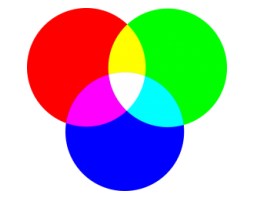
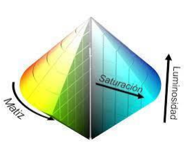
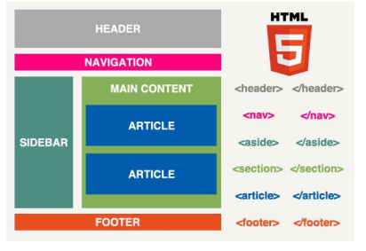

PLANIFICACIÓN INTERFACES WEB
Elementos básicos de una interfaz web
Color
Modelo RGB:
Es un modelo de color basado en la síntesis aditiva, con el que es posible representar un color mediante la mezcla por adición de los tres colores de luz primarios. En código HTML por ejemplo, para representar los distintos colores existe un código formado por tres números separados que pueden tomar valores desde el 0 hasta el 255 “[xxx], [xxx], [xxx]”, esto forma un total de 24 bits en binario. Cada uno de estos números representa uno de los colores siendo [R],[G],[B].

Modelo HSL:
Es un modelo de color cilíndrico, por el modo de representar gráficamente las coordenadas de su gama de colores en contraposición al modelo cúbico RGB. Se compone de tres canales:
• H (Hue): Traducido como tonalidad representa los colores primarios con todos los matices entre ellos. Los valores de tono se refieren mediante su posición en el círculo cromático. Queda normalizado que el rojo primario se sitúa a 0º, el verde primario a 120º y el azul primario a 240º, volviendo al rojo cuando regresamos al origen.
• L (Lightness): Traducido como luminosidad. El valor máximo de luminosidad de cualquier color es el blanco. El valor mínimo será el negro. El rango de valores de este canal se suele referir como un porcentaje: 0% luminosidad mínima (negro) y 100% luminosidad máxima (blanco). La luminosidad es la coordenada que representa la posición de un color en la altura del cilindro.
• S (Saturation): Traducido como saturación. Representa la cantidad de color. De tal manera que si cualquier color pierde saturación tiende hacia el gris. Si la gana, se aleja de él. Al igual que la luminosidad, este canal se suele representar como un porcentaje o un rango de valores entre 0 y 1. La saturación es la coordenada que representa la posición de un color en el radio del cilindro.

Unidades de medida relativa y absoluta. Pros y contra
Unidades Absolutas
Una medida indicada mediante unidades absolutas está completamente definida, ya que su
valor no depende de otro valor de referencia.
• in, pulgadas ("inches", en inglés). Una pulgada equivale a 2.54 centímetros.
• px, (píxel) relativa respecto de la resolución de la pantalla del dispositivo en el que se
visualiza la página HTML.
• cm, centímetros.
• mm, milímetros.
• pt, puntos. Un punto equivale a 1 pulgada/72, es decir, unos 0.35 milímetros.
La principal ventaja de las unidades absolutas es que su valor es directamente el valor que se
debe utilizar, sin necesidad de realizar cálculos intermedios. Su principal desventaja es que son
muy poco flexibles y no se adaptan fácilmente a los diferentes medios.
Unidades Relativas
La unidades relativas, a diferencia de las absolutas, no están completamente definidas, ya que
su valor siempre está referenciado respecto a otro valor. A pesar de su aparente dificultad, son
las más utilizadas en el diseño web por la flexibilidad con la que se adaptan a los diferentes
medios.
• em, relativa respecto del tamaño de letra del elemento.
• ex, relativa respecto de la altura de la letra x ("equis minúscula") del tipo y tamaño de
letra del elemento.
• %. Se define respecto del ancho disponible. Por ejemplo el ancho del contenedor que
atrapa una capa. Es común que a esta capa de «orden superior» se le aplique un ancho
fijo. Normalmente en píxeles.
• rem, muy parecida al em pero en lugar de ser en base al font-size del elemento es en
base al font-size del elemento root.
La gran ventaja de las unidades relativas es que siempre mantienen las proporciones
del diseño de la página. Establecer el margen de un elemento con el valor
1em equivale a indicar que el margen del elemento debe ser del mismo tamaño que su
letra y debe cambiar proporcionalmente.
Estructura de una pagina

Cabecera
La cabecera es la parte superior de la página web. En ella se encuentra la información
básica de la empresa o marca y es consistente en todo el sitio, es decir, se repite en
cada página de la web que visitamos.
Los elementos que normalmente se encuentran en la cabecera son:
• Logo de la empresa
• El menú de navegación
• Un cuadro de búsqueda
• Una pequeña descripción de la web
Sistemas de navegación
Los sistemas de navegación son los elementos de una interfaz que permiten la navegación por las diferentes secciones y páginas que componen el sitio web. Generalmente se presentan como menús formados por diferentes opciones, con las que el usuario puede interaccionar; al hacer click sobre cada una de ellas es cargada una página o sección de la misma. Pueden conformarse por varios elementos como son: gráficos, barras de menús horizontales y verticales y menús emergentes
Cuerpo
Es la parte de la web que alberga el contenido principal de tu página. Esta parte sí es
diferente en cada página de tu sitio. Es decir, no será el mismo contenido el que
incluyes en tu página de contacto que en la página principal.
Pie de página
El pie de página o footer es la parte inferior de una página web. Al igual que la
cabecera, se repite y es consistente en cada página. Además, también incluye
elementos básicos como:
• Menú simplificado
• Información de contacto
• Botones de redes sociales
• Logo de la empresa
• Enlace a la política de privacidad